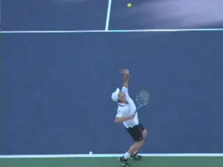
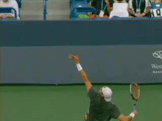

Internal Shoulder Rotation
Comprehensive unified tennis knowledge base — Fundamentals, Stroke Analysis, Reference Library, and more
Internal Shoulder Rotation:
Key to Serving Power
Chas Stumpfel
After playing tennis for over 40 years, I made a sudden and unexpected discovery about the serve. In the 1980s, I had played league tennis at the 3.5 to 4.0 level and for two years had won the championship of a larger league at work.
I played serve and volley tennis and my serve was very effective at my level. I had worked frequently and seriously on improving my serve. But it never progressed to a higher level of pace. I read every tennis book available, but there were no new ideas and I basically gave up the idea of improving my serve further.
Then in 2011, I learned about research that showed the primary source of racket speed in the serve was created by something called "internal shoulder rotation". According to the Australian biomechanical researcher Bruce Elliott, internal shoulder rotation was responsible for 40% of forward racket head speed.
Internal shoulder rotation, the research also showed, was set up by something else called "external shoulder rotation." I had never heard these terms.
Discovering the role of these rotations was a shock to me, but in reality they had been documented by Elliott et al as early as 1995. Elliott applied three dimensional quantitative camera systems to measure the contributions of the various joints and their motions to racket head speed for the serve. (Click Here to read Bruce's article on the Power Serve.)

Follow John Isner's elbow as you look for the upper arm to rotate as it adds speed to the racket. This is internal shoulder rotation.

Follow Andy Roddick's forearm backward, the forearm is an indication of exactly how the upper arm rotates. This is external shoulder rotation.
The irony is that high level servers had always used both external and internal shoulder rotation, instinctively or naturally. At that moment I realized that neither I, nor most players, nor even most coaches, understood the way racket head speed was maximized on the serve.
After over 30 years of study and practice, I realized I had missed the main concept of the serve and the source of its force. From that day forward, I wanted to understand these shoulder rotations as completely as possible.
As I grew to understand these critical rotations I realized that many of my own beliefs about the serve were false, misleading and had stopped progress on my serve. This article attempts to clarify these two key concepts: external and internal shoulder rotation.
For the purposes of simplicity the article excludes other important components of the service motion that also contribute to racket head speed, for example, elbow extension, shoulder extension, wrist flexion, leg drive, etc. The focus here is on how the shoulder rotates, and how you can learn to recognize this in your own serve.
Most players have the idea that swinging faster creates more pace. Few understand in addition that rotating the arm faster is actually the key to maximizing pace in any serve.

Just as the arm is straightening, the shoulder internally rotates explosively causing the racket head to accelerate. This rotation continues into the follow-through.
Internal Shoulder Rotation
So what exactly is internal shoulder rotation? Internal shoulder rotation is the rotation of the upper arm in the shoulder joint that accelerates the racket forward.
In a tennis serve, this rotation starts during the upward swing to the ball and continues out into the follow-through. During this rotation, the racket head turns over around 180 degrees in about two tenths of a second.
This rotation is critical especially in accelerating the racket after it has moved up from the racket dip and the arm has become near straight, at that time, as a checkpoint, the racket is roughly edge-on to the ball.
The racket goes from this edge-on position to face-on to the ball at impact mainly and simply as the result of internal shoulder rotation. (A widespread misunderstanding attributes this edge-on to face-on transition to ‘pronation', a poorly defined and misleading term in tennis usage.)
External Shoulder Rotation
But it is vital to understand that the ability to create great internal shoulder rotation depends on what happens previously in the motion. There is another critical rotation that precedes internal rotation and sets up the arm in position for this to happen. This is external shoulder rotation.

The amount of external shoulder rotation, as indicated here by the backward motion of the forearm, will determine how much racket head speed can be produced later by internal shoulder rotation.
The purpose of the wind up is to externally rotate the shoulder ending with the racket deep in the drop position. External shoulder rotation of the upper arm at the shoulder is indicated by the forearm position. A significant amount of external shoulder rotation, well beyond the norm, is critical, because it determines how much force the internal shoulder rotation can supply to accelerate the racket to impact. This issue will be discussed under "Function".
The Demos
To understand this better, let's look specifically at how the arm moves in the shoulder joint. Let's isolate these two rotations independently from the service motion to see more clearly how they work. You can do the same demos for yourself.
Extend your arm straight out to your side from your shoulder. With your arm straight, rotate the entire arm as a unit from the shoulder.
When the hand rotates so that the thumb goes forward, that is internal shoulder rotation. When the hand rotates so that the thumb goes backward (in the opposite direction) that is external shoulder rotation.

When the thumb rotates downward, that's internal rotation. When it rotates upward, that's external.
Now bend the elbow at 90 degrees and again rotate the upper arm back and forth to see external shoulder rotation with a bent elbow. During the service motion wind-up external shoulder rotation occurs with the elbow bent. With the elbow bent the forearm position shows the amount of external shoulder rotation, the forearm is a very useful indicator in high speed videos.
Function
So why are these rotations so powerful? That's because internal shoulder rotation of the upper arm is capable of both extremely rapidly acceleration and rotation rates. For the serve, the rotation rates can exceed 3000 degrees per second. These same joint rotations are shared by great pitchers and great quarterbacks.
Basically, the function of the external rotation is to stretch the internal shoulder rotation muscles, particular the two largest muscles attached to your arm, the Latissimus Dorsi and the Pectoralis Major, commonly known as the lat and the pec.
Once the muscles that produce internal shoulder rotation have been pre-stretched they shorten very rapidly in a few hundredths of a second leading to impact. This is an example of what biomechanists call the stretch shortening cycle.

The pre-stretched internal shoulder rotator muscles rotate the racket to impact in a few hundredths of a second for a high level pro serve.
The racket's well-known positions of edge-on to the ball in the upward swing and face-on to the ball at impact are the direct result of the explosive shortening of the stretched muscles during internal shoulder rotation.
Timing
What are the timing considerations of the stretch shortening cycle for an effective serve?
The quick use of the pre-stretched muscles is critical. To create added racket speed this must happen within a few tenths of a second. The more quickly they are used, the more energy is returned.
The heart of the high performance service motion is this pre-stretching of the internal shoulder rotation muscles through external shoulder rotation all happening over only tenths of a second. This is followed by trained timing that shortens these pre-stretched muscles explosively over approximately the last 30 milliseconds before impact.
It's important to note that the orientation of the arm to torso is critical to minimize the risk of shoulder impingement when unleashing this powerful force. For safety, the upper arm must always be positioned in the proper orientation relative to the shoulders.
There are of course many other complex factors that go into high performance serving. There are also deeper explanations of how internal and external shoulder rotation function that can go down literally to the molecular level. These are some of the topics I hope to address in future articles.
Chas Stumpfel is a research physicist (retired) with a background that includes various high speed imaging applications.
He is a recreational player who has been interested in tennis stroke techniques since the 1970s, especially those for the serve.
In 2011, he was surprised and fascinated to learn of research of that showed the racket head speed for the serve was largely powered by a joint motion that was not well known in tennis.
Source: tennisplayer.net archive — Internal Shoulder Rotation - Key to serving power.docx (John Yandell teaching library, 2002-2022). Extracted and rendered as HTML for Tennis Future Lab.